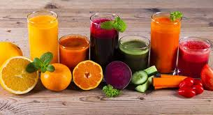

Favoritos:
Pasta Artesanal
11 de Abril 2019
Plantean que los griegos utilizaban lo que hoy en día conocemos por pasta (hecha de harina de trigo, no de mijo como en China) desde hace mucho antes que los viajes de Marco Polo. Dien entonces que la verdadera pasta se creó en la antigua Grecia en los alrededores del año 1000 antes de Cristo.
Sea cual sea la verdad, la pasta sigue siendo un plato delicioso que forma parte de las más sabrosas comidas que consumimos.

Juegos Naturales
11 de Abril 2019
No contienen grasa y aportan azúcares simples entregando energía saludable. Son ricos en minerales como el calcio, hierro y fósforo. Además contienen vitaminas A y C.
Nuestro cuerpo asimila un 85% de sus nutrientes, por lo que es ideal consumir un vaso de jugo de fruta al día..
Comentarios

Este Blog es lo Maximo, me ha salvado en muchas oportunidades, es practico y muy sencillo de interiorizar. su contenido es adaptarivo porque puedo visualizarlo desde mi smartphone
Gracias por tomar el tiempo necesario para desarrollar este blog en linea, es de gran utilidad para las personas interesadas en salud